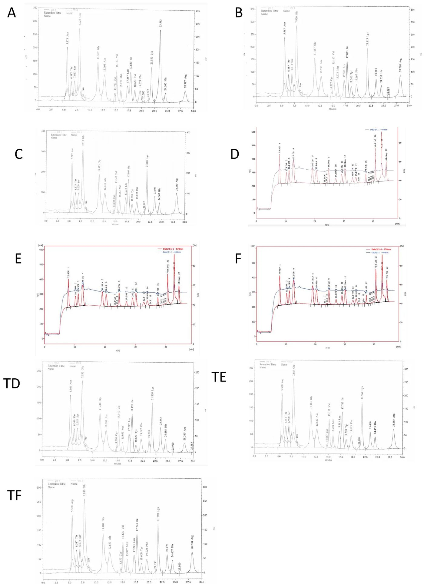
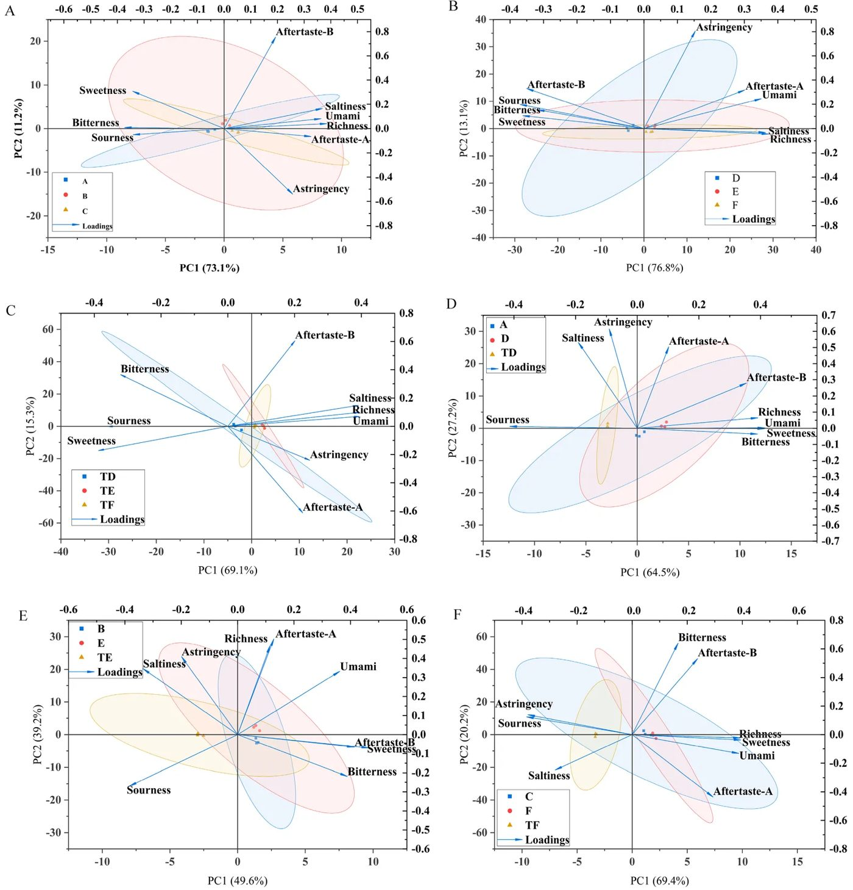
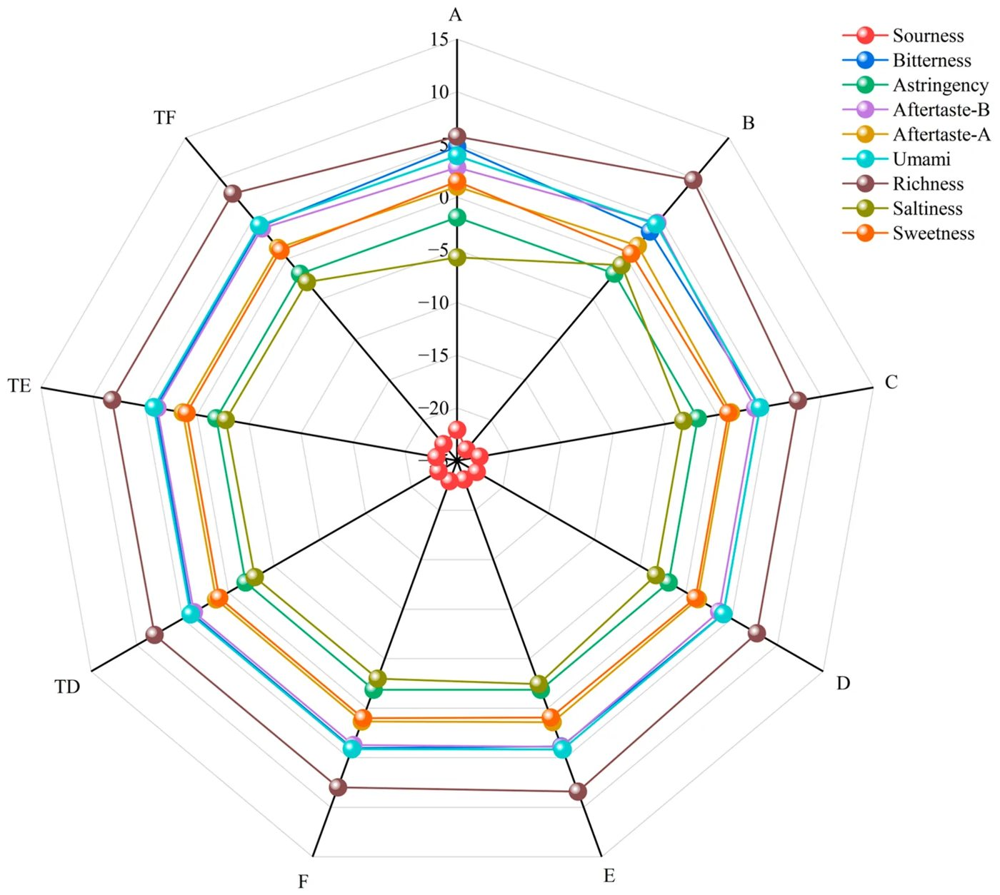
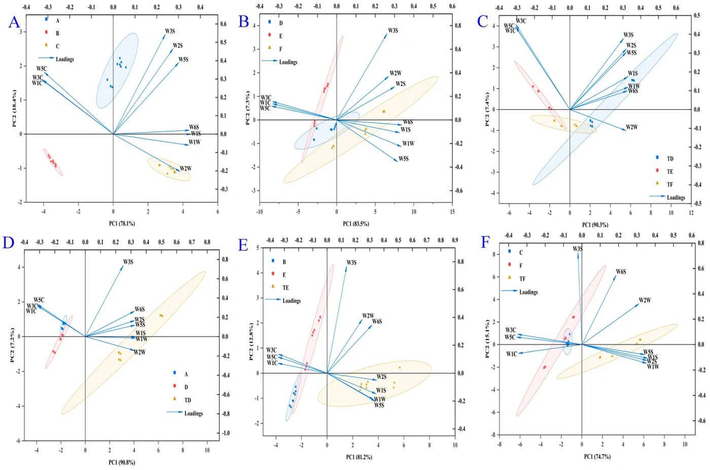
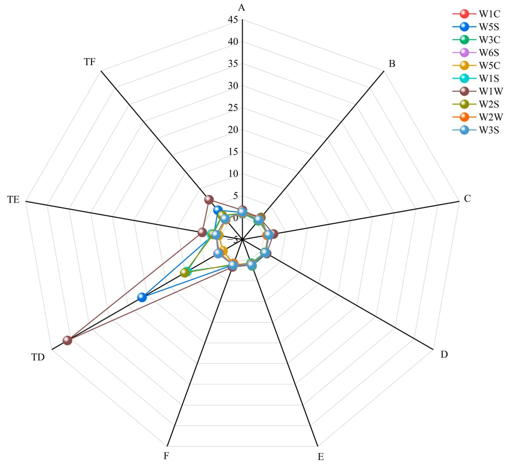
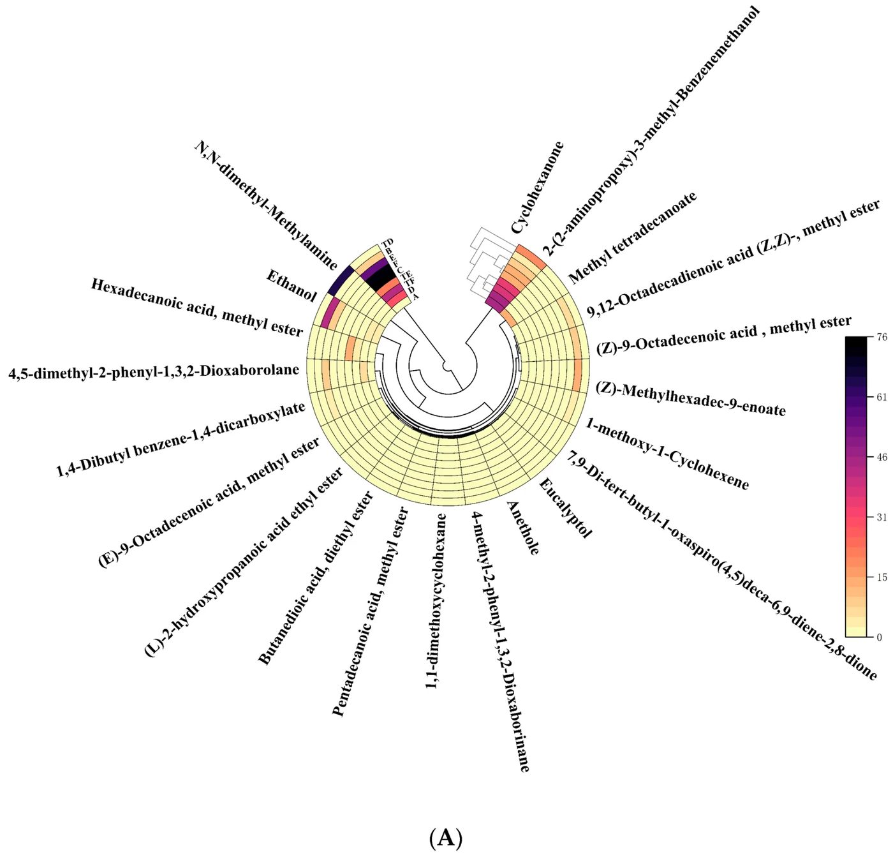
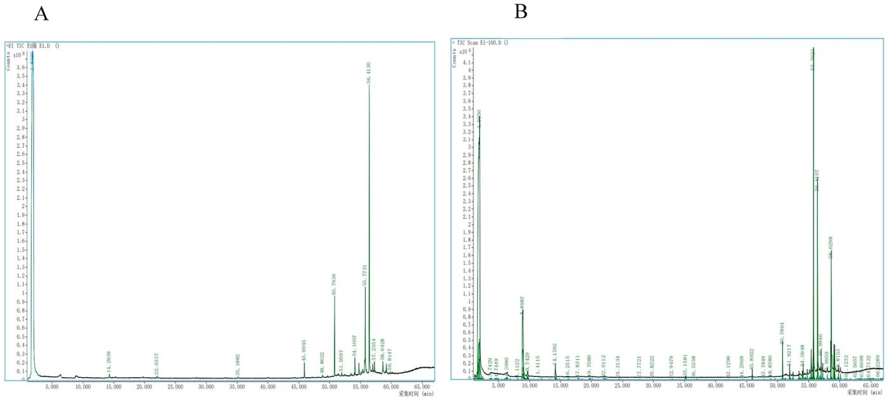

Sovuq vakuum yoki issiq pech: quritish krevetka ta'mi va oqsilini qanday o'zgartiradi


Krevetka flossini (quritilgan mayin go'sht tolalarini) tayyorlashda quritish usuli mahsulotning ta'mi va ozuqaviy qiymatini butunlay o'zgartiradi. Olimlar Macrobrachium rosenbergii ulkan chuchuk suv krevetkalarini vakuumli liofilizatsiya (VFD) va issiq havo (HAD) yordamida quritib, natijalarni taqqosladilar. Liofilizatsiya issiqlikka sezgir ko'p to'yinmagan yog' kislotalari va umami uchun mas'ul aminokislotalarni yaxshiroq saqlab qoladi. 70 °C li issiq havo esa Mayyar reaksiyasini kuchaytirib, qovurilgan mahsulot hidini beradi, biroq marinad tabiiy shirinlikni yo'qotadi.
Asosiysi
- 0,035 mbar vakuumdagi liofilizatsiya krevetkaning omega-yog'lari va umami ta'mini to'liq asraydi
- 70 °C dagi issiq havo qovurilgan hid beradi, ammo muhim aminokislotalar miqdorini kamaytiradi
- Ziravorlar va shakar krevetka go'shtining tabiiy shirin ta'mini sezilarli darajada to'sib qo'yadi
Batafsil
O'rtacha og'irligi 35,5 g bo'lgan chuchuk suv krevetkalari 3–5 daqiqa qaynatilib, ziravorli eritmada marinadlandi va quritishga yuborildi. Tadqiqotda past haroratli vakuumli liofilizatsiya (0,035 mbar bosim va −84 °C kondensator haroratida 21 soat) hamda an'anaviy issiq havo oqimi (70 °C da 21 soat) solishtirildi. Suvsizlanish tufayli har ikkala usulda ham oqsil va lipidlar konsentratsiyasi oshdi. Biroq HP-88 kapillyar kolonkasida (100 m) o'tkazilgan gaz xromatografiyasi VFD usuli pishirilgan go'shtdagi ko'p to'yinmagan yog' kislotalari va yog' kislotalarining metil efirlarini (FAME) termik parchalanishdan to'liq himoya qilganini ko'rsatdi.
Aminokislotalar tahlili shuni ko'rsatdiki, sistin faqat marinadlanmagan pishirilgan namunalarda hosil bo'ldi. Bu sisteinning termik oksidlanish dimerizatsiyasidan dalolat beradi; marinadlangan guruhlarda esa shakarlar yaratgan qaytaruvchi muhit tufayli ushbu reaksiya to'xtagan. Elektron burun (PEN3) va elektron til datchiklari orqali o'tkazilgan sensor tahlil VFD krevetkaga tabiiy boy umami ta'mini berishini tasdiqladi. HAD esa N,N-dimetilmetanamin kabi azotli uchuvchi birikmalarni va qovurilgan tuslarni faollashtirdi, ziravorlar esa glitsinga xos tabiiy shirinlikni sho'r-nordon parda bilan yopib qo'ydi.
Cheklovlar
Tadqiqot bitta partiyadan olingan krevetkalarda o'tkazilgan va sensor tahlillar professional degustatorlar emas, faqat elektron datchiklar yordamida bajarilgan.
Maqolaning to'liq tarjimasi
Annotatsiya
Gigant chuchuk suv krevetkasi (Macrobrachium rosenbergii) dunyodagi eng tijoriy qimmatli suv mahsulotlaridan biri bo‘lib, yuqori protein miqdori, muhim aminokislotalarning ko‘pligi va o‘ziga xos ta’m profili uchun yuqori baholanadi. Biroq, yuqori namlik va ozuqaviy moddalarga boy tarkibi tufayli, gigant chuchuk suv krevetkasi go‘shti mikrobial o‘sish va fermentativ faollik natijasida tez buzilishga moyil. Saqlash muddatini uzaytirish va tarqatishni osonlashtirish uchun turli xil qayta ishlash usullari qo‘llaniladi, ular orasida quritish an’anaviy va samarali saqlash texnikasi bo‘lib qolmoqda. Go‘sht tolalari (meat floss) — bo‘sh, tolali tekstura va mazali ta’m bilan ajralib turadigan mashhur quritilgan go‘sht mahsuloti bo‘lib, u pishirish, maydalash, ziravorlash va quritish kabi bir nechta ishlab chiqarish bosqichlarini o‘z ichiga oladi. Yakuniy mahsulot sifati, ayniqsa uning ozuqaviy qiymati va xushbo‘ylik xususiyatlari ishlab chiqarish jarayonida qo‘llaniladigan quritish usuliga chuqur bog‘liq. Issiq havo bilan quritish (HAD), vakuumli sublimatsion quritish (VFD), mikroto‘lqinli quritish va quyoshda quritish kabi turli xil quritish texnologiyalari oziq-ovqat matritsasining fizik-kimyoviy xususiyatlariga turlicha ta’sir ko‘rsatadi. Issiq havo bilan quritish tejamkor va keng qo‘llanilsa-da, u ko‘pincha ozuqaviy moddalarning sezilarli darajada degradatsiyasiga, lipidlarning oksidlanishiga va yoqimsiz ta’mlarning shakllanishiga olib kelishi mumkin bo‘lgan yuqori haroratlarni o‘z ichiga oladi. Tadqiqotlar shuni ko‘rsatadiki, termal ishlov berish oqsil tuzilmalarini o‘zgartiradi, muhim aminokislotalarning bio-mavjudligini kamaytiradi va Mayyar reaksiyasini rag‘batlantiradi; garchi bu yoqimli qovurilgan notalarni qo‘shsa-da, nazoratsiz sharoitlar zararli birikmalarni ham hosil qilishi mumkin. Aksincha, vakuumli sublimatsion quritish past harorat va vakuum sharoitida ishlaydi, materialning asl morfologiyasini, ozuqaviy komponentlarini va uchuvchi xushbo‘y birikmalarini samarali saqlaydi. Hisobotlar shuni ko‘rsatadiki, an’anaviy termal quritish bilan solishtirganda, bu usul krevetka mahsulotlarida yuqori sifatli oqsillar va uglevodlarni saqlab qoladi. Krevetkaning xushbo‘ylik profili iste’molchilar tomonidan qabul qilinishining muhim omili bo‘lib, qayta ishlash jarayonida hosil bo‘lgan uchuvchi organik birikmalar (VOCs) ning murakkab aralashmasidan iborat. Krevetkadagi asosiy xushbo‘y faol birikmalar lipidlarning oksidlanishi, aminokislotalarning degradatsiyasi va Mayyar reaksiyasidan kelib chiqadigan aldegidlar, ketonlar, spirtlar va oltingugurt o‘z ichiga olgan moddalarni o‘z ichiga oladi. Quritish usulining turi ushbu uchuvchi birikmalarning tarkibi va konsentratsiyasiga sezilarli ta’sir qiladi. Vakuumli sublimatsion quritish quritilgan krevetkaning asl tarkibiy qismlarini yaxshiroq saqlaydi, issiq havo bilan quritish esa yangi ta’m birikmalarining shakllanishiga yordam beradi. Bundan tashqari, VFD astaksantin kabi issiqlikka sezgir komponentlarni saqlashda eng samarali hisoblanadi, garchi u yuqori xarajat talab qilsa ham; aksincha, HAD astaksantinning biroz izomerizatsiyasi va degradatsiyasiga olib kelishi mumkin bo‘lsa-da, u optimallashtirilgan sharoitlarda yuqori samaradorlik bilan yuqori biologik faollikni saqlaydi. So‘nggi tadqiqotlar shuni ko‘rsatadiki, qayta ishlash sharoitlari va quritish texnologiyalari o‘rtasidagi o‘zaro ta’sir yakuniy sensorli atributlarni belgilaydi, ba’zi usullar shirinlik va karamel notalarini kuchaytiradi, boshqalari esa baliq hidi yoki achchiq hidlarni kuchaytirishi mumkin. Butun krevetka yoki krevetka kukunini quritish bo‘yicha keng qamrovli tadqiqotlarga qaramay, tadqiqot obyekti Litopenaeus vannamei bilan cheklangan. Litopenaeus vannamei va Macrobrachium rosenbergii go‘sht sifati bo‘yicha katta farq qiladi. Macrobrachium rosenbergii tarkibidagi xom yog‘ miqdori, to‘yinmagan yog‘ kislotalari miqdori va muhim aminokislotalar indeksi Litopenaeus vannamei ga qaraganda sezilarli darajada yuqori edi. Gigant chuchuk suv krevetkasi tolalarining turli quritish sharoitlarida qayta ishlashning turli bosqichlarida ozuqaviy moddalar va xushbo‘y birikmalarning dinamik o‘zgarishlari bo‘yicha kompleks tadqiqotlar hali ham yetishmaydi. Muayyan quritish usullari xomashyodan yakuniy tola mahsulotigacha bo‘lgan sifat parametrlarining evolyutsiyasiga qanday ta’sir qilishini tushunish qayta ishlash texnologiyalarini optimallashtirish uchun juda muhimdir. Ushbu tadqiqot ikki xil quritish usulining gigant chuchuk suv krevetkasi tolalarining ozuqaviy tarkibi va uchuvchi xushbo‘ylik profillariga turli qayta ishlash bosqichlarida ta’sirini o‘rganishga qaratilgan. Oqsillar, lipidlar va asosiy ta’m birikmalarining saqlanishini solishtirish orqali, ushbu tadqiqot yuqori ozuqaviy va sensorli xususiyatlarga ega bo‘lgan yuqori sifatli gigant chuchuk suv krevetkasi tolalarini ishlab chiqarish uchun nazariy asos va amaliy ko‘rsatmalar berishga intiladi.
Muhim
Quritish usuli (VFD va HAD) ozuqaviy moddalar va xushbo‘ylik profilini saqlashga keskin ta’sir qiladi, bunda VFD asl komponentlarni yaxshiroq saqlaydi, HAD esa yangi ta’m birikmalarining shakllanishiga yordam beradi.
Gigant chuchuk suv krevetkalari (Macrobrachium rosenbergii) tijorat yetkazib beruvchisidan (Along Aquatic Products Store, Huzhou, Zhejiang, Xitoy) 2025-yil 25-avgustda sotib olingan. Namunalar dastlab to‘r yordamida ovlangan. O‘rtacha krevetka vazni 35,5 g ni tashkil etdi. Turli quritish jarayonlariga ko‘ra, namunalar quyidagi to‘qqiz toifaga bo‘lingan: A (xom krevetka go‘shti), B (VFD xom krevetka go‘shti), C (HAD xom krevetka go‘shti), D (ziravorsiz pishirilgan krevetka go‘shti), E (VFD ziravorsiz pishirilgan krevetka go‘shti), F (HAD ziravorsiz pishirilgan krevetka go‘shti), TD (ziravorli pishirilgan krevetka go‘shti), TE (VFD ziravorli pishirilgan krevetka go‘shti), TF (HAD ziravorli pishirilgan krevetka go‘shti). Ziravorlar tarkibi (o‘rtacha 36,3% go‘sht chiqishi bilan 5 kg tozalangan krevetka uchun): 2500 g xom vino, 900 g qoyatosh shakari, 20 g shirin barglar, 20 g yulduzli anis, 30 g dolchin, 50 g olxo‘ri, 120 g zanjabil, 120 g yashil piyoz, 450 g limon, 2500 g o‘yilgan vino, 4 L toza suv.
VFD usuli: Jami 5 kg krevetka (namuna hajmi eksperimental krevetka go‘shti uchun talab qilinadigan miqdorga qarab aniqlangan) go‘shtni olish uchun 3–5 daqiqa davomida qaynatish orqali qayta ishlangan. Barcha protseduralar hayvonlarning azobini kamaytirish uchun axloqiy ko‘rsatmalarga muvofiq amalga oshirildi. Krevetka go‘shti ta’m berish uchun ziravorlar eritmasiga solingan. Ziravorlangan krevetka go‘shti 0–4 °C gacha oldindan sovutilgan.
Oldindan sovutilgan krevetka go‘shti 21 soat davomida vakuumli sublimatsion quritishdan o‘tkazildi. Namunalar vakuumli sublimatsion quritgich (LABCONCO, Kanzas-Siti, MO, AQSh) yordamida quritildi. Liofilizatsiya jarayonida vakuum bosimi 0,035 mbar darajasida saqlandi va kondensator (kollektor) harorati −84 °C ga o‘rnatildi. Vakuumli sublimatsion quritilgan krevetka go‘shti krevetka go‘shti tolasini ishlab chiqarish uchun maydalangan.
HAD usuli: Krevetka go‘shtini olish usuli VFD bilan bir xil edi. Krevetka go‘shti ta’m berish uchun ziravorlar eritmasiga solingan. Ziravorlangan krevetka go‘shti 70 °C haroratda 21 soat davomida quritilgan. Krevetka go‘shti tolasi qaynatilgan krevetka go‘shtidan (Macrobrachium rosenbergii) ziravorlash, quritish (vakuumli sublimatsion quritish yoki issiq havo bilan quritish orqali) va mexanik maydalashdan keyin olingan suvsizlangan, tolali, yumshoq qayta ishlangan mahsulot edi. U past suv faolligi, yuqori protein miqdori va mazali ta’mi bilan ajralib turardi, odatda ziravor yoki tayyor gazak sifatida ishlatiladi. Har bir issiq havo bilan quritish va vakuumli sublimatsion quritish jarayonida ivitilgan krevetkalarning vaznida sezilarli farq yo‘q edi.
Izoh
VFD (vakuumli sublimatsion quritish) — bu muzlatilgan mahsulotdan vakuumda namlikni olib tashlash bo‘lib, u tuzilish va ozuqaviy moddalarni isitishga qaraganda yaxshiroq saqlashga imkon beradi. HAD (issiq havo bilan quritish) — an’anaviy usul, arzonroq, lekin termal degradatsiyaga olib keladi.
Protein miqdori (GB 5009.5-2016 birinchi usul), yog‘ miqdori (GB 5009.6-2016 birinchi usul), uglevod miqdori (GB 28050-2011), namlik miqdori (GB 5009.3-2016 birinchi usul), kul miqdori (GB 5009.4-2016 birinchi usul), natriy miqdori (GB 5009.91-2017 to‘rtinchi usul), umumiy yog‘ kislotalari miqdori (GB 5009.168-2016 birinchi usul), ushbu tadqiqotda qo‘llanilgan protseduralar yordamida aniqlangan aminokislotalar yig‘indisi (2.3-bo‘limga qarang) A, B, C, D, E, F, TD, TE va TF namunalari uchun aniqlandi. Namunalar o‘rtasidagi farqlar solishtirildi. Har bir namuna 4 marta takroriy tahlil qilindi.
Triptofanni aniqlash: Namuna 40 meshli elakdan o‘tish uchun maydalangan va yaxshilab aralashtirilgan. Gomogenlashtirilgan namunaning aniq tortilgan 0,2 g qismi 35 ml hajmli gidroliz trubkasiga o‘tkazildi. 10 ml hajmli pipetka yordamida 10 ml 4 mol/L natriy gidroksid eritmasi qo‘shildi. Trubka yuqori toza azot bilan yuvildi, darhol vintli qopqoq bilan mahkam yopildi va 24 soat davomida gidroliz uchun 110 °C haroratdagi elektr termostatik quritish pechiga joylashtirildi. Gidrolizdan so‘ng, trubka chiqarildi va xona haroratigacha sovishiga ruxsat berildi. Gidrolizat miqdoriy jihatdan 50 ml hajmli o‘lchov kolbasiga o‘tkazildi. Gidroliz trubkasi natriy atsetat bufer eritmasi bilan bir necha marta yuvildi va neytrallash uchun birlashtirilgan yuvish vositalariga 7,5 ml 6 mol/L xlorid kislota qo‘shildi. Yaxshilab aralashtirilgandan va xona haroratigacha sovutilgandan so‘ng, eritma natriy atsetat bufer eritmasi bilan hajmiga yetkazildi va yaxshilab aralashtirildi. Olingan eritma sentrifugalandi va supernatant suyuqlik xromatografiyasi tahlilidan oldin organik membrana orqali filtrlandi. Suyuqlik xromatografiyasi shartlari quyidagicha edi: ustun, Waters Symmetry C18 (4,6 × 250 mm, 4,6 mkm); ustun harorati, 40 °C; aniqlash to‘lqin uzunligi, 280 nm; inyeksiya hajmi, 10 mkl; oqim tezligi, 1,2 ml/min; ishlash vaqti, 16 min; harakatlanuvchi faza A, atsetonitril (5%); harakatlanuvchi faza B, sirka kislotasi–natriy atsetat buferi (95%): 2,5 g natriy atsetat, 1,5 ml trietilamin va 1,17 ml muzli sirka kislotasi 1 L tozalangan suvda eritilgan.
Boshqa aminokislotalar (triptofandan tashqari): Namunaning aniq tortilgan miqdori gidroliz trubkasiga o‘tkazildi, shunda namunadagi protein miqdori 10–20 mg oralig‘ida bo‘ldi (D namunasi uchun taxminan 100 mg, E va F namunalari uchun taxminan 25 mg). Keyin 15 ml 6 mol/L xlorid kislota eritmasi (0,1% fenol o‘z ichiga olgan) qo‘shildi. Gidroliz trubkasi muzlatish aralashmasiga joylashtirildi va 3–5 daqiqa davomida muzlatildi, so‘ngra vakuum ostida evakuatsiya qilindi va azot bilan yuvildi. Trubka nihoyat azot muhitida yopildi yoki mahkam yopildi. Yopiq gidroliz trubkasi 22 soat davomida gidroliz uchun 110 °C haroratdagi pechga joylashtirildi. Gidrolizdan so‘ng, trubka chiqarildi va xona haroratigacha sovishiga ruxsat berildi. Gidroliz trubkasi ochildi va gidrolizat 50 ml hajmli o‘lchov kolbasiga filtrlandi. Gidroliz trubkasi bir necha marta kichik qismlar suv bilan yuvildi va yuvish vositalari bir xil 50 ml hajmli o‘lchov kolbasiga birlashtirildi. Eritma nihoyat suv bilan hajmiga yetkazildi, yaxshilab aralashtirildi va chayqatildi. Filtrning 1,0 ml alikvoti aniq 15 ml hajmli sinov trubkasiga o‘tkazildi va 50 °C haroratda sinov trubkasi konsentratori yordamida azot oqimi ostida quriguncha bug‘latildi. Quritilgan qoldiq yana suvda eritildi va yana quriguncha bug‘latildi. Olingan qoldiq pH 2,2 natriy sitrat bufer eritmasining tegishli hajmi bilan qayta tiklandi, yaxshilab aralashtirildi va membrana orqali filtrlandi. Keyin filtrat Scion Artemis 6000C aminokislota analizatori (Scion Instruments, Livingston, Shotlandiya, Buyuk Britaniya) yordamida tahlil qilindi.
Yog‘ kislotalari tarkibi GB 5009.168-2016 da tasvirlangan usulga muvofiq, kichik o‘zgartirishlar bilan aniqlandi. Gomogenlashtirilgan krevetka namunasining tegishli miqdori (taxminan 0,5–1,0 g, 0,001 g gacha aniq tortilgan) vintli qopqoqli gidroliz trubkasiga o‘tkazildi va ma’lum hajmdagi ichki standart eritmasi (glitseril triundekanoat, C11:0 triglitserid) qo‘shildi. Ko‘rinadigan yog‘ miqdori bo‘lgan namunalar uchun to‘g‘ridan-to‘g‘ri sovunlanish va metillanish amalga oshirildi. To‘liq lipidni qayta tiklashni talab qiladigan namunalar uchun quyidagi ekstraksiya tartibi qo‘llanildi: namuna tegishli sharoitlarda gidrolizlandi, so‘ngra yaxshilab aralashtirish bilan etanol qo‘shildi. Keyin sirka kislotasi va neft efiri ketma-ket qo‘shildi va aralashma ketma-ket uch marta suyuqlik-suyuqlik ekstraksiyasiga duchor qilindi. Har bir ekstraksiyadan olingan yuqori organik qatlamlar birlashtirildi va quriguncha bug‘latildi.
Olingan lipid qoldig‘i yog‘ kislotalarini tegishli yog‘ kislotasi metil efirlariga (FAMEs) aylantirish uchun gidroksidi sovunlanish va metillanishga duchor qilindi. Olingan FAMEs yig‘ildi va keyingi GC tahlili uchun n-geksanda qayta eritildi. Yog‘ kislotasi metil efirlari olovli ionlash detektori (FID) bilan jihozlangan Agilent 7820A gaz xromatografi (Agilent Technologies, Santa-Klara, CA, AQSh) yordamida tahlil qilindi. Xromatografik ajratish Agilent HP-88 kapillyar ustunida (100 m × 0,25 mm i.d., 0,20 mkm plyonka qalinligi) amalga oshirildi. Inyeksiya porti va detektor harorati mos ravishda 270 °C va 280 °C ga o‘rnatildi. Geliy (tozaligi ≥ 99,999%) 1,0 ml/min doimiy oqim tezligida gaz-tashuvchi sifatida ishlatildi. Namunalar 30:1 bo‘linish nisbati bilan bo‘linish rejimida kiritildi. Ustun pechining harorat dasturi quyidagicha edi: dastlabki harorat 100 °C 13 daqiqa davomida saqlandi; 10 °C/min tezlikda 180 °C gacha ko‘tarildi va 6 daqiqa davomida saqlandi; 1 °C/min tezlikda 200 °C gacha ko‘tarildi va 12 daqiqa davomida saqlandi; 10 °C/min tezlikda 230 °C gacha ko‘tarildi va 8 daqiqa davomida saqlandi. Yog‘ kislotasi cho‘qqilari haqiqiy FAME standartlari (Supelco 37-komponentli FAME aralashmasi, Sigma-Aldrich, Sent-Luis, MO, AQSh) bilan ushlab turish vaqtlarini solishtirish orqali aniqlandi. Miqdoriy aniqlash ichki standart kalibrlash usuli (glitseril triundekanoat, C11:0 triglitserid) yordamida amalga oshirildi. Natijalar har bir yog‘ kislotasining 100 g quruq moddaga gramm hisobida (g/100 g quruq vazn) ifodalangan. Barcha namunalar to‘rt marta (n = 4) tahlil qilindi va natijalar o‘rtacha ± standart og‘ish (SD) sifatida xabar qilinadi.
Namuna loyga aylantirildi va 2 g namuna olinib, 50 ml hajmli sentrifugalash trubkasiga joylashtirildi. Har bir namuna uch marta olindi, muhrlash membranasi bilan yopildi va 30 daqiqa davomida joylashtirildi. Boyitishdan so‘ng, test o‘tkazildi. Inyeksiya ignasi to‘g‘ridan-to‘g‘ri namunani o‘z ichiga olgan muhrlangan sentrifugalash trubkasiga to‘g‘ridan-to‘g‘ri bo‘shliqni so‘rish usuli yordamida kiritildi va aniqlash nemis PEN3 elektron buruni (AIRSENSE Analytics GmbH, Schwerin, Germaniya) yordamida amalga oshirildi. Aniqlash shartlari: elektron burun uchun gaz-tashuvchi tozalangan havo edi va tahlil xona haroratida amalga oshirildi. Namuna olish vaqti 1 s/guruh edi; sensorning o‘z-o‘zini tozalash vaqti 60 s edi. Namuna kiritish vaqti 5 s edi; inyeksiya oqim tezligi 400 ml min−1 edi. Tahlil namuna olish vaqti 80 s edi. 69–71 s dan olingan ma’lumotlar xulosa va tahlil uchun natijalar sifatida olindi. O‘nta sensor va tegishli sezgir moddalar 1-jadvalda ko‘rsatilgan. Har bir namuna 9 marta takroriy tahlil qilindi.
1-jadval. Nemis PEN3 elektron burun sensorining sezgir moddalari. / Sensor № / Sensor kodi / Sezgir moddalar / / :--- / :--- / :--- / / 1 / W1C / Aromatik birikmalar / / 2 / W5S / Azot oksidlari / / 3 / W3C / Ammiak, aromatik molekulalar / / 4 / W6S / Gidridlar / / 5 / W5C / Alkenlar, aromatik birikmalar, qutbli molekulalar / / 6 / W1S / Alkanlar / / 7 / W1W / Oltingugurt birikmalari / / 8 / W2S / Spirtlar, ba’zi aromatik birikmalar / / 9 / W2W / Aromatik birikmalar, organik oltingugurt birikmalari / / 10 / W3S / Alkanlar va alifatik birikmalar /
Oltita sensor (C00, AE1, CA0, CT0, AAE, GL1) va uchta standart elektrod ishlatilgan. Sensorlar faollashtirish va tuzatishdan so‘ng sinovdan o‘tkazildi. Sensor va ta’m qiymati o‘rtasidagi moslik ma’lumotlari 2-jadvalda ko‘rsatilgan.
2-jadval. Sensor va ta’m qiymati o‘rtasidagi moslik ma’lumotlari. / Sensor / Tegishli ta’m / Ta’m haqida ma’lumot / / :--- / :--- / :--- / / C00 / Nordonlik-achchiqlik / Achchiqlik, ta’mdan keyingi-B / / AE1 / Burishtiruvchanlik / Burishtiruvchanlik, ta’mdan keyingi-A / / CA0 / Nordonlik / Nordonlik / / CT0 / Sho‘rlik / Sho‘rlik / / AAE / Umami / Umami, boylik / / GL1 / Shirinlik / Shirinlik /
Namuna 1: 20 toza suv bilan maydalangan, sentrifugalangan va filtrlangan, so‘ngra SA402B elektron tili tomonidan aniqlangan. Balans: Sensor tozalash eritmasida 90 s, mos yozuvlar eritmasida 120 s, so‘ngra boshqa mos yozuvlar eritmasida 120 s yuvilgan. Sensor muvozanat holatida 30 s ga nolga tenglashtirilgan. Test: Test vaqti 30 s edi va birinchi ta’m qiymati yozib olindi; mos yozuvlar eritmasi bilan 3 s tozalangandan so‘ng, sensor 30 s davomida ta’mdan keyingi ta’mni sinash uchun yangi mos yozuvlar eritmasiga kiritildi. Beshta ta’m sensori C00, AE1, CA0, CT0, AAE va achchiqlik sensorlari ANO va BTO 4 marta sinovdan o‘tkazildi. Oxirgi uch marta olingan o‘rtacha qiymat birinchi tsiklni olib tashlagandan so‘ng test natijasi sifatida qabul qilindi. Shirinlik sensori GL1 5 marta sinovdan o‘tkazildi va o‘rtacha 3 ta testning o‘rtacha qiymati birinchi va oxirgi tsikllarni olib tashlagandan so‘ng test natijasi sifatida qabul qilindi. Har bir namuna 3 marta takroriy tahlil qilindi.
Namuna tayyorlash: Har bir namuna (1–2 g, 0,001 g gacha aniq tortilgan) qattiq fazali mikroekstraksiya (SPME) avtosampleriga mos keladigan 20 ml hajmli bo‘shliq flakoniga o‘tkazildi. Keyinchalik, 100 mkl 0,1% (v/v) siklogeksanon ichki standart ishchi eritmasi qo‘shildi va aralashma gomogenizatsiyani ta’minlash uchun 30 s davomida yaxshilab aralashtirildi. Keyin flakonlar GC-MS tizimining isitish moduliga joylashtirildi va yumshoq aralashtirish ostida 10 daqiqa davomida 70 °C da muvozanatlandi. Muvozanatdan so‘ng, SPME tolasi (80 mkm DVB/uglerod/PDMS, Agilent China Ltd., Pekin, Xitoy) uchuvchi birikmalarning adsorbsiyasiga imkon berish uchun 40 daqiqa davomida bo‘shliqqa ta’sir qilindi. Nihoyat, tola tortib olindi va 5 daqiqa davomida 250 °C da termal desorbsiya uchun darhol GC inyeksiya portiga kiritildi.
Asbob shartlari: Xromatografik ajratish Agilent 7000E uch karrali kvadrupol mass-spektrometriga ulangan Agilent 8890 gaz xromatografi (Agilent Technologies, Santa-Klara, CA, AQSh) yordamida amalga oshirildi. Inyeksiya porti harorati 250 °C da saqlandi va barcha inyeksiyalar bo‘linishsiz rejimda amalga oshirildi. Geliy (tozaligi ≥ 99,999%) 1,0 ml/min doimiy oqim tezligida gaz-tashuvchi sifatida ishlatildi. Analitlar HP-5MS UI kapillyar ustunida (30 m × 0,25 mm i.d., 0,25 mkm plyonka qalinligi; Agilent) ajratildi. Erituvchini kechiktirish vaqti 1,0 daqiqaga o‘rnatildi.
Ustun pechining harorat dasturi quyidagicha edi: dastlabki harorat 40 °C 4 daqiqa davomida saqlandi, 3 °C/min tezlikda 90 °C gacha oshirildi va 3 daqiqa davomida saqlandi, keyin 1 °C/min tezlikda 100 °C gacha ko‘tarildi va 1 daqiqa davomida saqlandi, so‘ngra 3 °C/min tezlikda 120 °C gacha oshirildi va 1 daqiqa davomida saqlandi, va nihoyat 6 °C/min tezlikda 250 °C gacha ko‘tarildi va 3 daqiqa davomida saqlandi. Mass-spektrometr 70 eV elektron energiyasida elektron ionlanish (EI) rejimida ishladi. Ion manbai, kvadrupol va uzatish liniyasining harorati mos ravishda 200 °C, 150 °C va 250 °C ga o‘rnatildi. To‘liq skanerlash mass-spektrlari 35–500 massa-zaryad nisbati (m/z) oralig‘ida olindi. Barcha namunalar ma’lumotlarning takrorlanishini ta’minlash uchun uch marta (n = 3) tahlil qilindi. Ichki standartdan kelib chiqadigan potentsial matritsa effektlarini baholash uchun bo‘sh namunalar (siklogeksanon qo‘shilmasdan tayyorlangan) bir xil asbob sharoitida qo‘shilgan namunalar (100 mkl 0,1% siklogeksanon o‘z ichiga olgan) bilan parallel ravishda tahlil qilindi, bu har qanday maqsadli birikmalar ichki standart bilan birga elutsiya qilinganligini yoki undan o‘zgartirilganligini aniqlash uchun. Ushbu tekshirish uchuvchi birikmalarni aniqlash ishonchliligini ta’minlash uchun barcha namuna guruhlari (xom, pishirilgan va ziravorlangan) uchun amalga oshirildi.
Barcha tajribalar har bir davolash guruhi uchun kamida uchta mustaqil biologik takrorlash (n ≥ 3) bilan o‘tkazildi, har bir takrorlash haqiqiy biologik o‘zgaruvchanlikni qamrab olishini ta’minlash uchun alohida qayta ishlangan krevetka namunalaridan olingan. Proksimal tarkib, aminokislotalar va yog‘ kislotalarini tahliliy aniqlash har bir biologik takrorlash uchun to‘rt marta (n = 4) amalga oshirildi, elektron til va GC-MS tahlillari esa uch marta (n = 3), elektron burun tahlili esa to‘qqiz marta (n = 9) amalga oshirildi. Natijalar o‘rtacha ± standart og‘ish (SD) sifatida ifodalangan. Statistik tahlillar SPSS Statistics (19.0 versiyasi, IBM Corp., Armonk, NY, AQSh) yordamida amalga oshirildi. Parametrik testdan oldin ma’lumotlar taqsimotining normalligi Shapiro-Wilk testi (p > 0,05 normallikni ko‘rsatadi) yordamida baholandi va dispersiyalarning bir jinsliligi Levene testi (p > 0,05 teng dispersiyalarni ko‘rsatadi) yordamida tekshirildi. Ikkala taxminni qondiradigan ma’lumotlar to‘plami uchun juftlik bo‘yicha ko‘p qirrali taqqoslashlar uchun Tukeyning halol muhim farqi (HSD) post hoc testi bilan bir tomonlama dispersiya tahlili (ANOVA) qo‘llanildi. Normallik yoki dispersiyalarning bir jinsliligi taxminini buzgan ma’lumotlar to‘plami uchun Kruskal-Wallis testi, so‘ngra oilaviy xatolik darajasini nazorat qilish uchun ko‘p qirrali taqqoslashlar uchun Bonferroni tuzatishi bilan Dunnning post hoc testi qo‘llanildi. Barcha statistik testlar uchun α = 0,05 ahamiyatlilik chegarasi belgilandi va p < 0,05 bo‘lganda farqlar statistik jihatdan muhim deb hisoblandi. Jadvallar va rasmlardagi turli ustki harflar guruhlar o‘rtasidagi muhim farqlarni bildiradi. Elektron burun va elektron til tahlillari natijasida hosil bo‘lgan ko‘p o‘lchovli ma’lumotlar to‘plami uchun namunalarni klasterlashni vizualizatsiya qilish va asosiy diskriminatsiya qiluvchi o‘zgaruvchilarni aniqlash uchun OriginPro 2026b (OriginLab Corporation, Northampton, MA, AQSh) yordamida asosiy komponentlar tahlili (PCA) amalga oshirildi; va elektron til uchun SA402B ta’m sezish tizimi dasturiy ta’minoti Taste Analysis Application V1.1/V1.2, Insent Inc., Atsugi, Yaponiya). Birinchi ikki asosiy komponentning (PC1 va PC2) kümülatif dispersiya hissasi stavkalari o‘lchovni kamaytirishning adekvatligini baholash uchun xabar qilindi. Barcha PCA modellari modelning mustahkamligini baholash uchun to‘liq o‘zaro tekshirish (leave-one-out) yordamida tasdiqlandi. PCA dan oldin, o‘zgaruvchilar o‘rtasidagi miqyos effektlarini yo‘q qilish uchun ma’lumotlar avtomatik ravishda masshtablandi (o‘rtacha markazlashtirilgan va standart og‘ishga bo‘lingan). Radar diagrammalari, biplotlar, dumaloq issiqlik xaritalari va akkord diagrammalarini o‘z ichiga olgan grafik vizualizatsiya OriginPro 2026b (OriginLab Corporation, Northampton, MA, AQSh) yordamida yaratilgan. Barcha asboblar tahlilining takrorlanishi takroriy yugurishlar uchun nisbiy standart og‘ishni (RSD) hisoblash orqali tasdiqlandi, qabul qilish mezonlari GC-MS va elektron til ma’lumotlari uchun RSD < 15% va elektron burun sensorining javoblari uchun RSD < 10% qilib belgilandi. Chiqindilar Grubbs testi (α = 0,05) yordamida aniqlandi va faqat tahliliy yoki asbob xatolari aniq tasdiqlanganda chiqarib tashlandi; aks holda, barcha yaroqli ma’lumotlar nuqtalari yakuniy tahlilda saqlanib qoldi.
Barcha ozuqaviy parametrlar — shu jumladan protein, yog‘, uglevod, kul, natriy, umumiy yog‘ kislotalari va umumiy aminokislotalar — quruq modda asosida (g/100 g quruq vazn) xabar qilinadi. Namlik miqdori qayta ishlash natijasida yuzaga kelgan suvni olib tashlash samaradorligini aks ettirish uchun nam asosdagi foiz sifatida alohida taqdim etiladi.
Protein qiymatlari 71,18 ± 0,12 g/100 g (TE) dan 89,27 ± 0,10 g/100 g (C) gacha o‘zgargan. Xom namunalar orasida C (pechda quritilgan xom, 89,27) A (yangi xom, 86,32) va B (muzlatilgan xom, 83,75) dan sezilarli darajada yuqori edi (p < 0,05), bu pechda quritish quruq asosda ham proteinli komponentlarning nisbiy konsentratsiyasiga olib kelishi mumkinligini ko‘rsatadi. Ziravorsiz pishirilgan guruhlar uchun D (85,29), E (85,91) va F (85,61) statistik jihatdan o‘xshash (p > 0,05) va shuningdek A bilan taqqoslanadigan edi, bu faqat pishirish quruq modda asosida protein miqdorini sezilarli darajada o‘zgartirmasligini ko‘rsatadi. Shunisi e’tiborga loyiqki, barcha ziravorlangan namunalar (TD 75,08, TE 71,18, TF 74,76) ularning ziravorsiz hamkasblariga (D/E/F) qaraganda sezilarli darajada past edi (p < 0,05), TE esa eng past ko‘rsatkichni ko‘rsatdi.
Yog‘ miqdori 3,20 ± 0,31 (A) dan 11,18 ± 0,42 g/100 g (TD) gacha oshdi. Xom B (4,26) va C (4,65) sezilarli darajada farq qilmadi (p > 0,05), lekin ikkalasi ham A dan oshib ketdi. Ziravorsiz pishirilgan D–F namunalari (8,54–8,98) bir jinsli klasterni tashkil etdi (p > 0,05) va xom guruhlarga qaraganda sezilarli darajada yuqori edi, bu pishirish quruq vazn normallashuvidan keyin ham lipidlarning konsentratsiyasini yoki saqlanishini rag‘batlantirishini anglatadi, ehtimol qayta ishlash jarayonida yog‘ yo‘qotilishini kamaytiradigan protein denaturatsiyasi va tarkibiy o‘zgarishlar tufayli. Ziravorlangan TD eng yuqori yog‘ miqdorini (11,18) ko‘rsatdi, holbuki TE (6,70) va TF (7,00) TD dan sezilarli darajada past, lekin xom namunalardan yuqori edi, bu quritish usullari o‘rtasidagi ziravorlarni yutish va yog‘ni bog‘lash qobiliyatlaridagi farqlarni aks ettiradi. Umumiy yog‘ kislotalari deyarli bir xil tendentsiyaga amal qildi, qiymatlari 2,97 (A) dan 8,44 (TD) gacha. E va F (p > 0,05) dan tashqari barcha guruhlar sezilarli darajada farq qildi. Yog‘ va umumiy yog‘ kislotalari o‘rtasidagi kuchli korrelyatsiya shuni ko‘rsatadiki, ko‘pchilik lipidlar yog‘ kislotalari sifatida mavjud va yog‘ga ishlov berish ta’siri tarkibiy emas, balki asosan jismoniydir.
Uglevod miqdori 0,08 ± 0,01 g/100 g (C) dan 14,72 ± 0,57 g/100 g (TE) gacha o‘zgarib, juda yuqori o‘zgaruvchanlikni ko‘rsatdi. Ziravorlar bo‘lmaganda, muzlatilgan xom krevetka (B, 6,13 ± 0,86 g/100 g) yangi xom krevetkaga (A, 4,10 ± 0,44 g/100 g) qaraganda sezilarli darajada yuqori uglevod miqdorini ko‘rsatdi (p < 0,05). Xuddi shunday, muzlatilgan pishirilgan krevetka (E, 0,65 ± 0,06 g/100 g) quritilmagan hamkasbiga (D, 1,66 ± 0,17 g/100 g) qaraganda sezilarli darajada yuqori qiymatni ko‘rsatdi (p < 0,05). Ushbu hodisani muzlatish bilan quritish jarayonida past haroratli sublimatsiya namlikni tezda olib tashlashi, krevetka matritsasi ichida g‘ovakli tuzilishni yaratishi va quruq modda skeletining qisqarishiga olib kelishi, shu bilan quruq vazn asosida uglevodlarning nisbiy ulushini oshirishi bilan izohlash mumkin. Shu bilan birga, muzlatish bilan quritish uglevodlarning degradatsiya yo‘qotilishini minimal darajada keltirib chiqaradi, shuning uchun quruq modda asosida ko‘rinadigan to‘planish effektiga olib keladi. Biroq, pechda quritish ta’siri sezilarli darajada farq qildi. Pechda quritilgan xom krevetka (C, 0,08 ± 0,01 g/100 g) va pechda quritilgan pishirilgan krevetka (F, 0,75 ± 0,05 g/100 g) bir-biridan sezilarli darajada farq qilmadi (p > 0,05) va ikkalasi ham juda past darajada qoldi. Bu birinchi navbatda pechda quritish paytida ishlatiladigan yuqori haroratlar (odatda 50–70 °C yoki undan yuqori) bilan bog‘liq bo‘lib, ular uglevodlarning degradatsiyasi va iste’molini tezlashtiradi. Bir tomondan, yuqori haroratlar krevetka go‘shtidagi kamaytiruvchi shakar va erkin aminokislotalar o‘rtasidagi Mayyar reaksiyasini rag‘batlantiradi, bu esa katta miqdordagi shakarni iste’mol qiladi. Boshqa tomondan, uzoq muddatli isitish ba’zi oligosaxaridlarning karamelizatsiyasiga yoki termal parchalanishiga olib kelishi mumkin, bu esa uglevod miqdorini yanada kamaytiradi. Bundan tashqari, pechda quritish paytida sekin suvsizlanish jarayoni shakarlarning namlik bilan birga yuzaga ko‘chib o‘tishiga olib kelishi mumkin, u yerda ular termal degradatsiya yo‘qotilishiga uchraydi, natijada muzlatilgan namunalar bilan solishtirganda quruq vazn asosida ancha past uglevod darajalari hosil bo‘ladi. Ziravorlar qo‘shilgandan so‘ng, quritish usulidan qat’i nazar, uglevod miqdori keskin oshdi: TD (ziravorli pishirilgan, quritilmagan) 6,25 ± 0,10 g/100 g ga yetdi, TF (ziravorli pechda quritilgan pishirilgan) 10,60 ± 0,11 g/100 g ga yetdi va TE (ziravorli muzlatilgan pishirilgan) 14,72 ± 0,57 g/100 g gacha yetdi, barchasi ularning tegishli ziravorsiz hamkasblaridan (D/E/F) sezilarli darajada yuqori (p < 0,05). Bu sezilarli o‘sish ziravorlar tarkibidagi uglevod asosidagi ingredientlarning (masalan, saxaroza, maltodekstrin va kraxmal) ekzogen qo‘shilishi bilan bog‘liq. Ular orasida ziravorli muzlatilgan guruh (TE) eng yuqori uglevod miqdorini ko‘rsatdi, bu ham ekzogen shakar qo‘shilishi, ham quruq moddaga muzlatish bilan quritishning konsentratsiya effekti natijasidir. Barcha uchta ziravorli guruhlar o‘zlarining ziravorsiz hamkasblaridan sezilarli darajada yuqori edi, bu ziravorlar krevetka mahsulotlarining uglevod miqdorini belgilovchi asosiy omil ekanligini va quritish usullarining ta’siridan ancha ustunligini ko‘rsatadi.
Kul miqdori 4,51 ± 0,09 (D) dan 7,64 ± 0,10 g/100 g (TF) gacha o‘zgargan. Xom namunalar A (6,38), B (5,86) va C (6,00) barchasi sezilarli darajada farq qildi (p < 0,05), bu quritish usullari minerallarning saqlanishiga yoki konsentratsiyasiga turlicha ta’sir qilishini ko‘rsatadi. Ziravorsiz pishirilgan D–F namunalari eng past kul qiymatlarini (4,51–4,66) ko‘rsatdi va statistik jihatdan bir jinsli edi (p > 0,05), bu pishirish ba’zi minerallarni yuvib tashlashi mumkinligini anglatadi. Ziravorli namunalar TD, TE va TF eng yuqori kul miqdorini (7,50–7,64) ko‘rsatdi, TF TD va TE dan sezilarli darajada oshib ketdi (p < 0,05), bu muzlatish bilan quritish namunaning asl kul nisbatini yaxshiroq saqlashini tasdiqlaydi. Natriy miqdori, barcha ziravorsiz guruhlarda juda past bo‘lsa-da (0,30–0,40 mg/100 g, p > 0,05), ziravorli mahsulotlarda keskin oshdi: TD 1,63, TE 1,99 va TF 1,84 mg/100 g (barchasi bir-biridan va ziravorsiz guruhlardan sezilarli darajada farq qiladi, p < 0,05). Bu qo‘shilgan tuzni asosiy natriy manbai sifatida aniqlaydi va ziravorli guruhlar o‘rtasidagi farq qayta ishlash jarayonida tuzning turli xil qo‘shilish samaradorligini aks ettiradi.
Umumiy aminokislotalar 62,32 ± 2,47 (A) dan 91,10 ± 1,84 g/100 g (E) gacha o‘zgargan. Xom B (85,88), C (82,67) va pishirilgan D (83,73) statistik jihatdan o‘xshash edi (p > 0,05), E (91,10) va F (90,31) esa boshqa barcha guruhlardan sezilarli darajada yuqori edi. Bu shuni ko‘rsatadiki, birlashtirilgan pishirish va quritish — ayniqsa pishirgandan keyin muzlatish bilan quritish — haqiqiy sof sintezsiz aminokislotalarning ekstraksiyasini yoki o‘lchovini kuchaytirishi mumkin. Ziravorli namunalar TD, TE va TF (70,97–71,23) bir-biridan sezilarli darajada farq qilmadi (p > 0,05), lekin ularning ziravorsiz hamkasblaridan sezilarli darajada past edi, bu yana protein/aminokislota degradatsiyasidan ko‘ra ziravorlar matritsalaridan suyultirish effektini ko‘rsatadi.
Namlik miqdori (g/100 g nam namuna) 5,36 ± 0,09 (E) dan 76,56 ± 0,30 (A) gacha o‘zgargan va barcha guruhlar bir-biridan sezilarli darajada farq qildi (p < 0,05). Yangi xom A eng yuqori namlikka ega edi, barcha quritilgan mahsulotlar (B, C, E, F, TE, TF) esa sezilarli darajada past qiymatlarni (5,36–21,93) ko‘rsatdi. Shunisi e’tiborga loyiqki, D va TD yangi namunalar bilan taqqoslanadigan yuqori namlikni saqlab qoldi. Ushbu ma’lumotlar quritish jarayonlari (muzlatish bilan quritish va pechda quritish) namlikni olib tashlashda juda samarali ekanligini va ziravorlar quritish samaradorligiga xalaqit bermasligini tasdiqlaydi. Muhimi, barcha ozuqaviy komponentlar quruq modda asosida ifodalanganligi sababli, namlikdagi farqlar guruhlar o‘rtasidagi taqqoslashlarni chalkashtirmaydi.
Faqat pishirish (D va A) quruq asosda yog‘ va yog‘ kislotalarini oshirdi, lekin kul miqdorini kamaytirdi. Protein miqdori barqaror qoldi va umumiy aminokislotalar miqdori oshdi. Faqat quritish (B/C va A) o‘zgaruvchan ta’sirlarni keltirib chiqardi: muzlatish bilan quritish aminokislotalar va uglevodlarni saqlashda yaxshiroq ta’sir ko‘rsatdi, quritish esa protein, kul va umumiy yog‘ kislotalarini sezilarli darajada oshirdi. Ziravorlar dominant omilash doimiy omil bo‘lib, natriy, kul va uglevodlarni sezilarli darajada oshirdi, shu bilan birga protein, aminokislotalar va (ba’zi hollarda) umumiy yog‘ kislotalarini suyultirdi. Qo‘shimcha ma’lumotlar uchun 3-jadvalga qarang.
Turli xil qayta ishlash sharoitlariga duchor bo‘lgan krevetka namunalarining aminokislotalar profillari 4-jadvalda keltirilgan. Jami 18 ta aminokislota aniqlandi. Barcha aminokislotalar miqdori quruq modda asosida (g/100 g quruq vazn) ifodalangan. Ko‘pgina aminokislotalar uchun davolash guruhlari o‘rtasida sezilarli farqlar kuzatildi (p < 0,05), bu qayta ishlash usullarining krevetka go‘shtining aminokislotalar profiliga sezilarli ta’sirini aks ettiradi.
Yangi xom krevetka (A) bilan solishtirganda, muzlatish bilan quritish (B) ham, pechda quritish (C) ham ko‘pgina aminokislotalar miqdorini sezilarli darajada oshirdi (p < 0,05). Lizin va arginin eng aniq o‘sishni ko‘rsatdi. Lizin miqdori A da 4,69 ± 0,24 g/100 g dan B da 7,67 ± 0,23 g/100 g gacha va C da 7,12 ± 0,06 g/100 g gacha oshdi (p < 0,05). Arginin miqdori A da 3,62 ± 0,10 g/100 g dan B da 8,43 ± 0,78 g/100 g gacha va C da 8,21 ± 0,05 g/100 g gacha oshdi (p < 0,05). Asp, Glu va Leu uchun ham shunga o‘xshash o‘sish tendentsiyalari kuzatildi, quritilgan namunalardagi qiymatlar yangi namunalardagidan sezilarli darajada yuqori edi (p < 0,05) yoki o‘sish tendentsiyalarini ko‘rsatdi. Ushbu natijalar quruq modda asosida ham VFD, ham HAD krevetkadagi ko‘pgina aminokislotalar miqdorini samarali oshirishini ko‘rsatadi.
Pishirilgan krevetkada turli quritish usullarining aminokislotalar miqdoriga ta’siri xom krevetkada kuzatilgan tendentsiyalarga o‘xshash tendentsiyalarga amal qildi. Pishirilgan krevetka (D) bilan solishtirganda, muzlatilgan pishirilgan krevetka (E) va pechda quritilgan pishirilgan krevetka (F) odatda ko‘pgina aminokislotalar miqdorining oshishini ko‘rsatdi. Lizin D da 8,27 ± 0,27 g/100 g dan E da 9,02 ± 0,16 g/100 g gacha va F da 9,02 ± 0,36 g/100 g gacha oshdi (p < 0,05). E dagi triptofan miqdori (9,41 ± 0,14 g/100 g) D (9,52 ± 0,06 g/100 g) va F (10,66 ± 0,07 g/100 g) ga qaraganda sezilarli darajada past edi.
Pishirilgan krevetka (D, E, F) va ziravorli pishirilgan krevetka (TD, TE, TF) o‘rtasidagi taqqoslash ziravorlar aminokislotalar profiliga sezilarli va differentsial ta’sir ko‘rsatganligini ko‘rsatdi. Salbiy ta’sirlar (sezilarli pasayishlar): ziravorlar odatda aminokislotalar miqdorining sezilarli darajada pasayishiga olib keldi. Leu, Tyr va Phe har qanday pishirilgan guruhlar (D, E, F) va ularning ziravorli hamkasblari (TD, TE, TF) o‘rtasida sezilarli farqlarni ko‘rsatmadi (p > 0,05). Tsistin o‘ziga xos taqsimot naqshini ko‘rsatdi. U xom guruhlarda (A, B, C) yoki biron bir ziravorli guruhlarda (TD, TE, TF) aniqlanmagan (0,00 g/100 g), lekin pishirilgan ziravorsiz guruhlarda D (0,34 ± 0,12), E (0,35 ± 0,03) va F (0,44 ± 0,11) da doimiy ravishda aniqlangan (p < 0,05).
Keng qamrovli aminokislotalar ma’lumotlariga asoslanib, quyidagi asosiy tendentsiyalar va asosiy topilmalarni umumlashtirish mumkin. Quritish effekti: ham VFD, ham HAD xom va pishirilgan krevetkada quruq modda birligiga ko‘pgina aminokislotalar miqdorini sezilarli darajada oshirdi (Trp dan tashqari). VFD ning aminokislotalarga boyitish effekti HAD dan yaxshiroq edi. Pishirish effekti: pishirish ko‘pgina aminokislotalar miqdorini sezilarli darajada oshirdi, lekin Tyr va Trp ni sezilarli darajada kamaytirdi (p < 0,05). Ziravorlar effekti: aminokislotalarning aksariyati ziravorlar guruhida sezilarli darajada kamaydi. Aminokislotalarni saqlash xususiyatlari: tsistin faqat ziravorsiz pishirilgan guruhda aniqlangan, lekin barcha yangi va ziravorli guruhlarda emas, bu ziravorlardagi kamaytiruvchi shakar yoki tuzlar tsistinning barqarorligiga yoki aniqlanishiga xalaqit berishi mumkinligini ko‘rsatadi. Triptofan xom va ziravorli muzlatilgan namunalarda yaxshi saqlangan, lekin ziravorsiz pishirilgan namunalarda sezilarli darajada yo‘qolgan, bu qayta ishlash usuli va ziravorlar formulasini tanlash triptofanni saqlash uchun juda muhim ekanligini ko‘rsatadi. Aminokislotalar spektri 1-rasmda ko‘rsatilgan.
Turli xil qayta ishlash sharoitlariga duchor bo‘lgan krevetka namunalarining yog‘ kislotalari profillari 5-jadvalda keltirilgan. Jami 14 ta asosiy yog‘ kislotasi aniqlandi, shu jumladan 5 ta to‘yingan yog‘ kislotasi (SFA: C14:0, C15:0, C16:0, C17:0, C18:0), 4 ta monoto‘yinmagan yog‘ kislotasi (MUFA: C16:1, C18:1, C20:1) va 5 ta ko‘p to‘yinmagan yog‘ kislotasi (PUFA: C18:2, C18:3, C20:2, C20:4, EPA, DHA). Barcha yog‘ kislotalari miqdori quruq modda asosida (g/100 g quruq vazn) ifodalangan. Sezilarli farqlar biz...












Tadqiqot sxemasi
Maqola taqriz qilinadigan Foods (Basel, Switzerland) jurnalida nashr etilgan. Ammo bu ham bitta tadqiqot, yakuniy xulosa emas.
Manba
| Manba | Kategoriya | Litsenziya |
|---|---|---|
| Foods (Basel, Switzerland) (Europe PMC) | volatiles | CC BY 4.0 |
Manbalar
| Manba | Havola |
|---|---|
| Страница статьи | europepmc.org |
| Полный текст (PDF) | europepmc.org |
| DOI | doi.org |
| Метаданные Crossref | api.crossref.org |
| Europe PMC | europepmc.org |